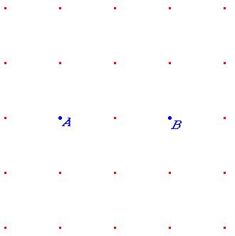

Problema 84
Busca un tercer punto C de manera que forme con A y B un triángulo rectángulo.
Hazlo de todas las maneras posibles

Hernán, P., Salar, A, Soler, M. (1983), Es posible/Grupo Cero. ICE de la Universidad de Valencia. (pag 24)